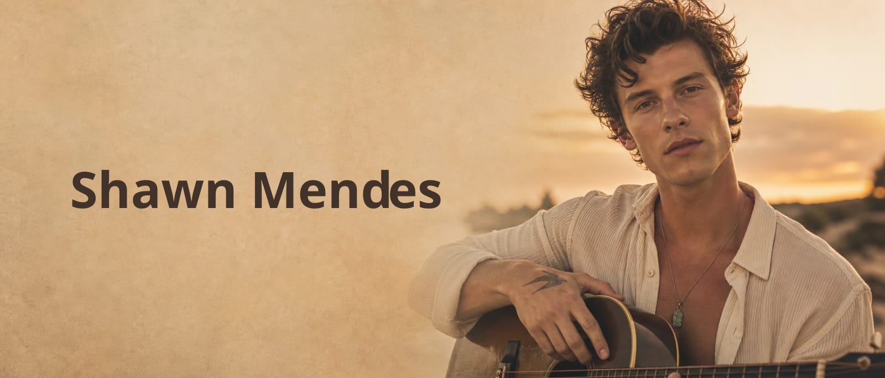
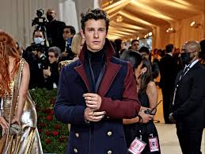
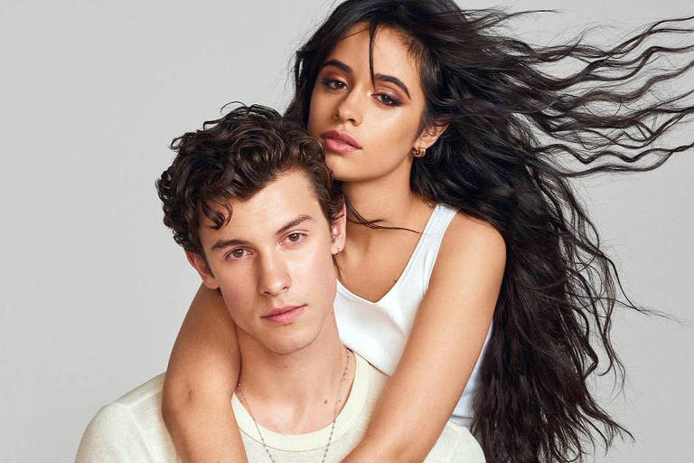
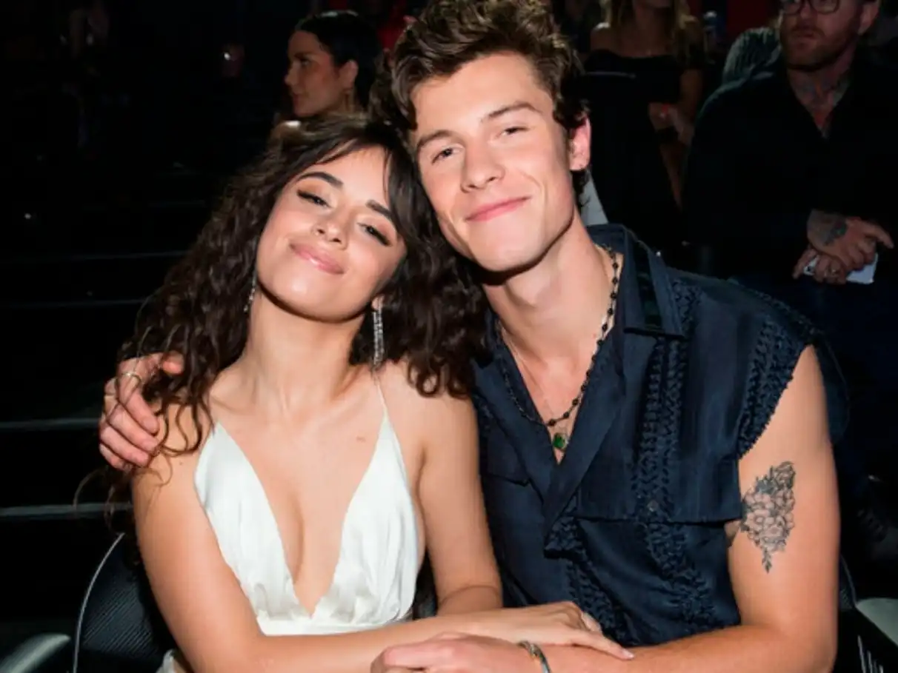
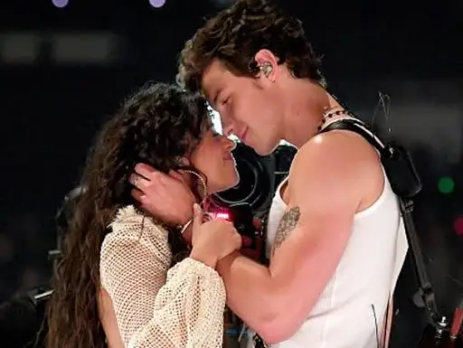

Shawn Peter Raul Mendes nasceu em 8 de agosto de 1998, na cidade de Pickering, localizada na província de Ontário, Canadá. Filho de Karen e Manuel Mendes, ele cresceu em um ambiente familiar que incentivou seu interesse pela música desde cedo. Durante a adolescência, desenvolveu suas habilidades como cantor e músico, dando os primeiros passos rumo à carreira que mais tarde o tornaria uma estrela internacional da música pop.
Ele iniciou sua trajetória na música publicando vídeos de covers no aplicativo Vine, uma plataforma de vídeos curtos muito popular na época. Seu talento vocal e sua presença carismática rapidamente chamaram a atenção do público, fazendo com que seus vídeos alcançassem milhões de visualizações. O sucesso nas redes sociais abriu portas para a indústria musical, permitindo que ele assinasse seu primeiro contrato com uma gravadora e desse início à sua carreira profissional.
Seu talento chamou a atenção de gravadoras e rapidamente ele se tornou um dos maiores artistas pop da atualidade.
Ao longo de sua carreira, Shawn Mendes lançou diversos sucessos que conquistaram fãs ao redor do mundo, incluindo "Stitches", "Treat You Better", "There's Nothing Holdin' Me Back" e "Señorita", parceria com Camila Cabello. Suas músicas alcançaram posições de destaque nas principais paradas musicais internacionais, enquanto seus álbuns acumularam milhões de reproduções e chegaram ao topo das classificações em vários países. Esse sucesso consolidou Shawn como um dos artistas pop mais influentes de sua geração.
A trajetória de Shawn Mendes começou em 2013, quando ele passou a publicar vídeos curtos cantando covers na plataforma Vine. Graças ao seu talento vocal e carisma, seus vídeos rapidamente se tornaram virais, atraindo milhões de visualizações e seguidores em pouco tempo. O sucesso nas redes sociais chamou a atenção da indústria musical, levando-o a assinar contrato com uma gravadora e dar início à sua carreira profissional. Poucos anos depois, Shawn já era reconhecido internacionalmente como uma das grandes promessas da música pop.
Shawn Mendes já marcou presença em diversas edições do Met Gala, considerado um dos eventos de moda mais prestigiados do mundo. Conhecido por seu estilo elegante e sofisticado, o cantor costuma atrair a atenção da imprensa e dos fãs com produções alinhadas ao tema de cada edição. Suas aparições no evento reforçam sua influência não apenas na música, mas também no universo da moda e do entretenimento internacional.


Um dos relacionamentos mais marcantes da vida de Shawn Mendes foi com a cantora Camila Cabello, com quem viveu um namoro muito acompanhado pela mídia e pelos fãs. Os dois colaboraram em sucessos musicais como Señorita e mantiveram um relacionamento entre 2019 e 2021, retomando brevemente o contato em 2023. Ao longo de sua carreira, Shawn também foi alvo de rumores envolvendo outras celebridades, mas sempre procurou manter grande parte de sua vida amorosa de forma discreta e longe dos holofotes.



Em 2022, Shawn Mendes decidiu interromper sua turnê mundial para priorizar sua saúde mental. O cantor explicou que vinha enfrentando altos níveis de estresse e pressão devido à intensa rotina de shows, viagens e compromissos profissionais. Desde então, passou a dedicar mais tempo ao autocuidado, à família e ao seu bem-estar emocional, buscando um equilíbrio maior entre a vida pessoal e a carreira. Essa pausa permitiu que Shawn refletisse sobre seus objetivos e retornasse à música de forma mais saudável e consciente.
| Álbum | Ano | Data de Lançamento |
|---|---|---|
| Handwritten | 2015 | 14 de abril de 2015 |
| Illuminate | 2016 | 23 de setembro de 2016 |
| Shawn Mendes | 2018 | 25 de maio de 2018 |
| Wonder | 2020 | 4 de dezembro de 2020 |
| Shawn | 2024 | 15 de novembro de 2024 |
O cachê de Shawn Mendes varia de acordo com o tipo de evento, local da apresentação e duração do show. Como um artista de reconhecimento internacional, seus contratos para festivais, eventos corporativos e grandes turnês podem alcançar valores de centenas de milhares de dólares por apresentação, o que equivale a milhões de reais. Esses números refletem sua popularidade global, o alcance de sua música e a grande demanda por suas performances ao vivo.
Valor ingressos:Este é o clipe de “Stitches”, um dos maiores sucessos do cantor canadense Shawn Mendes. O videoclipe oficial foi lançado em 24 de junho de 2015 e se tornou um fenômeno mundial, acumulando mais de 1,6 bilhão de visualizações no YouTube ao longo dos anos. A música foi um dos grandes marcos da carreira de Shawn Mendes, ajudando a consolidá-lo como um dos principais artistas pop de sua geração.
O cantor e compositor canadense Shawn Mendes nasceu em 8 de agosto de 1998, na cidade de Pickering, localizada na província de Ontário. Foi nessa região da área metropolitana de Toronto que ele passou grande parte da infância e adolescência, desenvolvendo seu interesse pela música antes de conquistar fama internacional através de vídeos publicados na plataforma Vine. Atualmente, Shawn Mendes é reconhecido como um dos artistas pop mais bem-sucedidos de sua geração.
Shawn Mendes mantém uma forte presença nas redes sociais, onde compartilha novidades sobre sua carreira, projetos musicais, bastidores de shows e momentos do dia a dia com milhões de fãs ao redor do mundo.